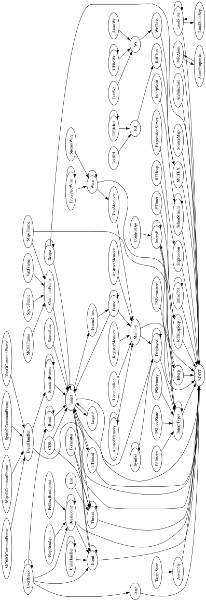
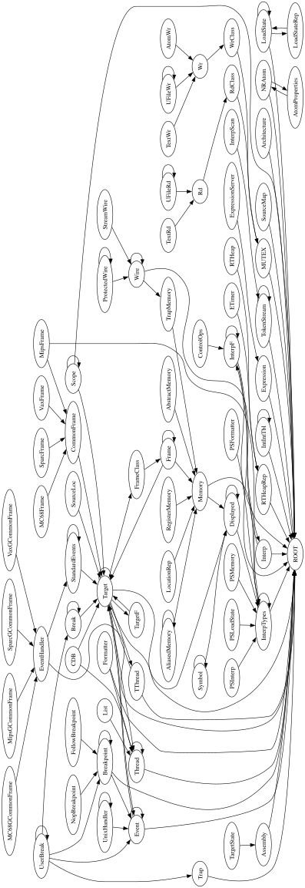

ratio=compress x-coordinate residual — accepted A2 divergenceCharacterized, not fixed. The
NaN.gv family (graphs-NaN / share-NaN /
windows-NaN) stays diverged because of the accepted
A2 font-metric divergence —
not a bug in the compress or spline code.
digraph xyz {
orientation=landscape;
ratio=compress;
size="16,10";
AbstractMemory -> Memory;
AliasedMemory -> AliasedMemory;
AliasedMemory -> Memory;
Architecture -> ROOT;
Assembly -> ROOT;
AtomProperties -> NRAtom;
AtomWr -> Wr;
Break -> Break;
Break -> Target;
Breakpoint -> Breakpoint;
Breakpoint -> Event;
Breakpoint -> ROOT;
CDB -> Target;
CDB -> Thread;
CommonFrame -> Target;
ControlOps -> InterpF;
Displayed -> Displayed;
Displayed -> InterpTypes;
ETimer -> RTHeapRep;
Event -> Event;
Event -> ROOT;
Event -> Target;
EventHandler -> ROOT;
EventHandler -> StandardEvents;
Expression -> ROOT;
ExpressionServer -> Expression;
FollowBreakpoint -> Breakpoint;
Formatter -> ROOT;
Formatter -> Thread;
Frame -> Frame;
Frame -> Memory;
Frame -> Target;
FrameClass -> Frame;
IntIntTbl -> IntIntTbl;
IntIntTbl -> ROOT;
Interp -> InterpF;
Interp -> ROOT;
InterpF -> Interp;
InterpF -> InterpF;
InterpF -> ROOT;
InterpScan -> TokenStream;
InterpTypes -> InterpTypes;
InterpTypes -> ROOT;
List -> Thread;
LoadState -> LoadState;
LoadState -> LoadStateRep;
LoadState -> ROOT;
LoadStateRep -> LoadState;
LocationRep -> Memory;
MC68Frame -> CommonFrame;
MC68GCommonFrame -> EventHandler;
MUTEX -> ROOT;
Memory -> Displayed;
Memory -> InterpTypes;
MipsFrame -> CommonFrame;
MipsFrame -> InterpTypes;
MipsGCommonFrame -> EventHandler;
NRAtom -> AtomProperties;
NRAtom -> ROOT;
NopBreakpoint -> Breakpoint;
PSFormatter -> InterpTypes;
PSInterp -> InterpTypes;
PSLoadState -> InterpTypes;
PSMemory -> InterpTypes;
ProtectedWire -> ProtectedWire;
ProtectedWire -> Wire;
RTHeap -> RTHeapRep;
RTHeapRep -> ROOT;
Rd -> RdClass;
RdClass -> MUTEX;
RegisterMemory -> Memory;
Scope -> ROOT;
Scope -> Scope;
Scope -> Target;
SourceLoc -> Target;
SourceMap -> ROOT;
SparcFrame -> CommonFrame;
SparcGCommonFrame -> EventHandler;
StandardEvents -> StandardEvents;
StandardEvents -> Target;
StreamWire -> Wire;
Symbol -> Displayed;
Symbol -> Symbol;
TThread -> ROOT;
TThread -> Target;
Target -> Displayed;
Target -> Event;
Target -> FrameClass;
Target -> ROOT;
Target -> TThread;
Target -> Target;
Target -> TargetF;
Target -> Thread;
TargetF -> Target;
TargetState -> Assembly;
TextRd -> Rd;
TextWr -> Wr;
Thread -> ROOT;
Thread -> Thread;
TokenStream -> ROOT;
TokenStream -> TokenStream;
Trap -> ROOT;
TrapMemory -> Memory;
UFileRd -> Rd;
UFileRd -> UFileRd;
UFileWr -> UFileWr;
UFileWr -> Wr;
UnixHandler -> Event;
UnixHandler -> UnixHandler;
UserBreak -> Break;
UserBreak -> Breakpoint;
UserBreak -> Event;
UserBreak -> Trap;
UserBreak -> UserBreak;
VaxFrame -> CommonFrame;
VaxGCommonFrame -> EventHandler;
Wire -> ROOT;
Wire -> TrapMemory;
Wire -> Wire;
Wr -> WrClass;
WrClass -> MUTEX;
}
The compress x-network-simplex path is faithful to C: every
constraint input matches the oracle — the width-constraint value
(flip=0 x=1152), the containNodes minlens, the aux-edge
counts (LR 132 / pairs 318 / total 471 / weight-sum 1612), the
lrBalance step, and the per-rank node orders are
all identical. The drawings below confirm it: at full scale they are visually
indistinguishable.
The only diverging input is the half-width of 9 nodes, which
the port's font measurer reports 0.5–1.03 pt wider than C
(VaxFrame, VaxGCommonFrame, Wire,
UFileWr, AtomWr, WrClass,
ProtectedWire, StreamWire, TextWr). Those
widths feed the left-to-right separation constraints
(width = ND_rw(u) + ND_lw(v) + nodesep), pushing their
ROUND()-ed minlen sum from C's 11368 to 11380 (+12).
Without compress that error hides in network-simplex slack; under
ratio=compress the weight-1000 width edge makes every separation
binding, so the sub-pixel error surfaces as a
−3..−5 pt interior x-shift.
That shift is what flips the verdict to diverged: it nudges the
Target→TThread straight line 0.55 pt past the tail node's box
wall, so shortestPath must bend the polyline around the corner and
the router emits an extra bezier piece (7 pts vs C's 4) — a
structural difference. Forcing those 9 widths to C's values reproduces C
exactly: node-x off 53/76 → 0/76, spline 7 → 4 pts.
The residual is therefore 100% upstream font metrics — out of scope (a shared
text-measurement primitive every label flows through; the spline router is
faithful and forbidden by scope).
Target→TThread splineZoomed to the two nodes and their edge (layout frame, before
the landscape rotation). Golden = native dot; Ours = graphviz-ts.
4 green dots (golden: 1 bezier) vs 7 red dots
(ours: 2 beziers). The three extra red dots cluster near Target where the route
kinks at the tail-box corner (circled) — the sub-pixel bend that splits one
bezier into two and flips the verdict to diverged.
The −3 pt leftward shift of TThread (red vs green ellipse) drags the red line just outside Target's box wall; the router bends it at the grey corner vertex, splitting one bezier into two. Golden clears the wall and stays a single straight bezier.
The complete renders (landscape). At this scale the −3..−5 pt x-shift is sub-perceptual — that is exactly why it is an accepted delta.


Largest node-x deltas (port − native), all dy=0.
Every node whose width is correct is still dragged by its wider neighbours.
| node | native cx | ours cx | Δx |
|---|---|---|---|
| MC68Frame | — | — | −5 |
| SparcFrame | — | — | −5 |
| VaxFrame | — | — | −4 |
| TThread | 466.32 | 463.32 | −3 |
| (≈25 more) | — | — | −3 |
| metric | port (as-is) | port (forced C widths) | native |
|---|---|---|---|
| nodes off in X (|Δx|>0.5) | 53 / 76 | 0 / 76 | — |
| Target→TThread spline pts | 7 | 4 | 4 |
| family maxDelta | 21 | 0 | — |
Reproduce: GVBINDIR=/tmp/gvplugins npx tsx
test/corpus/render-one.ts ~/git/graphviz/tests/graphs/NaN.gv dot vs
GVBINDIR=/tmp/gvplugins ~/git/graphviz/build/cmd/dot/dot -Tsvg …/NaN.gv.
Full root-cause log: ../decision-journal.md.